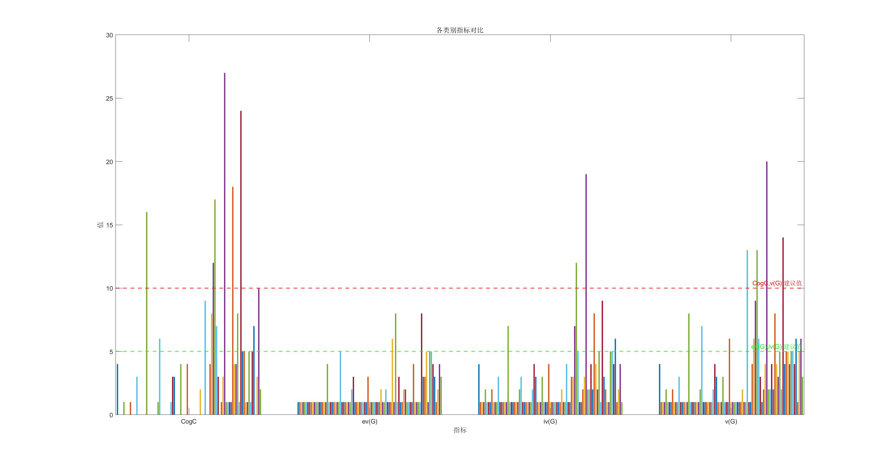
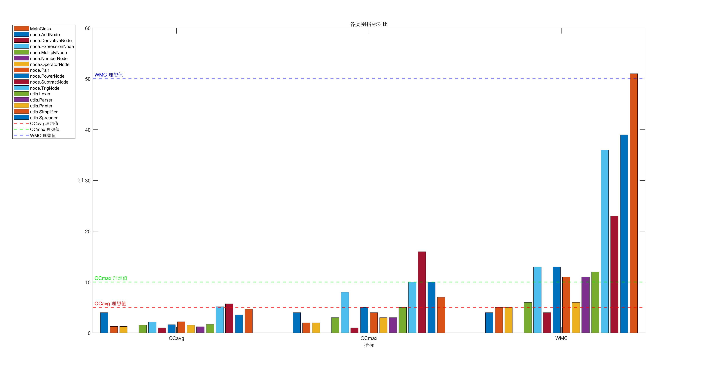
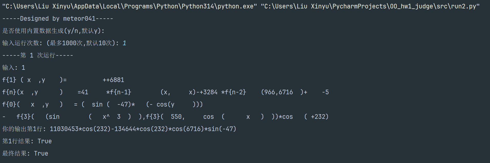
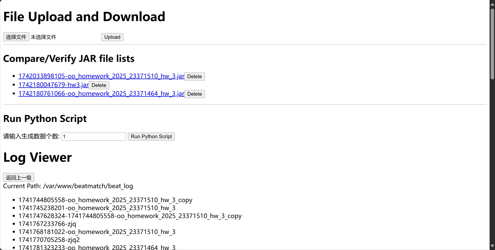

面向对象设计与构造-hw3思路
本文最后更新于 2025年3月18日 晚上
hw3综述
- hw3在hw2的基础上增加了非递推函数与函数求导的功能.
- 针对求导因子,我们新增
DerivativeFactor类,对每种因子类新增了求导方法,并对大部分节点类补充了深度克隆方法 - 针对非递推函数,我们在
Spreader类中新增了spreadSelf等一系列方法,考虑到递推函数可能包含非递推函数,要求字符串input在接受spreadSelf方法展开所有非递推函数后,再调用spreadRecursive方法展开递推函数. - 对于评测机,由于求导因子和函数的
parse()方法难以调包实现,自己用Python写一份复杂的代码无异于对拍.本次作业基于JavaScript和Node.js实现的对拍器网站,根据Python自动程序生成的数据,通过与同学们的jar包进行运行结果比较,快速查找bug.
架构分析
通过UML class diagrams视频学习了UML图的基本绘制方法.
- 建立两个软件包,分别为
utils和node.utils软件包中包含各种工具类,供MainClass主类调用,node软件包内包含抽象语法树(AST)的各类树节点. utils类包含的Lexer作为词法分析器;Parser作为语法分析器,将Lexer类作为参数;Spreader类提供展开函数的方法;Printer类提供将HashMap<Pair, BigInteger>类型的表达式转换成字符串形式以供打印;Simplifier类内含和差化积等化简方法,主要负责三角函数的化简.node类以ExpressionNode类作为基类,子类分为NumberNode和OperatorNode两种.OperatorNode类作为各种运算符节点(如AddNode等)的基类.NumberNode类含有Pair和coeff,其中Pair指的是x的次幂和三角函数列表组成的自定义类,coeff是BigInteger类型的整数系数.
优点分析:
- 层次化设计:
- 将系统划分为
utils和node两个包,职责清晰,便于维护和扩展. - 建立数据抽象层次,
Pair作为x的次幂和三角函数乘积的组合,将x和三角函数有效组合起来,便于管理.
- 将系统划分为
- 可扩展性:
ExpressionNode作为基类,支持扩展新的节点类型(如DerivativeNode).Pair的设计支持灵活的组合,便于添加新的三角函数或变量类型.
- 类型安全:
- 使用
BigInteger处理大整数计算,有效避免数据溢出. HashMap<Pair, BigInteger>提供高效的表达式存储和检索.
- 使用
- 可测试性:
- 每个模块可以独立测试,便于定位问题
缺点分析:
- 复杂度较高:
Pair的设计一定程度上增加了系统的复杂度,我在写代码的时候必须依靠足够的注释才能不至于搞混.OperatorNode类的多层继承关系可能会让代码的维护成本增高.
- 性能问题:
HashMap<Pair, BigInteger>的存储方式会在大规模数据下性能下降Simplifier的和差化积方法在面对大数据时性能爆炸,所幸课程网站的测试没有那么严苛
OO度量分析
数目分析
使用Satistic插件计算了hw3各类的代码规模,使用MATLAB绘制如下图:
其中Printer,Simplifier,Parser等工具类代码占比大.
经典度量分析
| 度量指标 | 全称 | 中文 | 说明 |
|---|---|---|---|
| CogC | Cognitive Complexity | 认知复杂度 | 用于衡量代码在人类理解上的难度,考虑代码的结构对理解的影响 |
| ev(G) | Essential Complexity | 本质复杂度 | 衡量代码中不可简化的逻辑复杂度,反映了代码中必须存在的复杂度 |
| iv(G) | Design Complexity | 设计复杂度 | 衡量代码中由于设计决策引入的复杂度,反映了代码结构的复杂度 |
| v(G) | Cyclomatic Complexity | 圈复杂度 | 衡量代码中独立路径的数量,反映了代码的测试难度和维护成本 |
| OCavg | Average Cyclomatic Complexity per Method | 方法的平均圈复杂度 | 衡量一个类中所有方法的平均圈复杂度 |
| OCmax | Maximum Cyclomatic Complexity per Method | 方法的最大圈复杂度 | 衡量一个类中所有方法的最大圈复杂度 |
| WMC | Weighted Methods per Class | 类中所有方法的圈复杂度之和 | 衡量一个类中所有方法的复杂度之和 |
| LCOM | Lack of Cohesion in Methods - Class | 方法的内聚缺乏度 | 值越大,说明类内聚合度越小 |
| FANIN | Fan-in | 类的扇入 | 表示调用该模块的上级模块的个数,扇入越大,表示该模块的复用性越好 |
| FANOUT | Fan-out - Class | 类的扇出 | 表示该模块直接调用地下级模块的个数,扇出过大表明模块复杂度高,但扇出过小也不好 |
程序函数度量分析如下: 
程序类度量分析如下: 
- 部分方法的复杂度较高,尤其是
utils.Printer.transform和utils.Simplifier.processEntry方法,表明这些方法的逻辑较为复杂. - 部分方法的
ev(G)和iv(G)较高,表明这些方法的逻辑和设计复杂度较高,可能难以维护和扩展. - 大多数类的方法平均圈复杂度较低,部分类如
utils.Printer,utils.Parser的复杂度较高.
hack及bug分享
本次顺利通过强测,但是由于性能分太低被分到了B屋."塞翁失马,焉知非福."这次在B屋的互测中我通过自动生成+对拍机的轰炸查到了同学们的许多bug.
第三次作业独有的bug主要是求导带来的深层拷贝问题:对于多个因子相乘得到的项,其求导的公式为: \[ dx(term_1*term_2*\cdots *term_n)=\sum^n_{ i=1 }dx(term_i)\prod_{j\neq i}^n term_j \] 结果会出现很多重复的项,这里最好保证每个项都经过一次深层拷贝,保证对象不一致.否则当一个对象被修改的时候,它远在天边的"孪生兄弟"也随之改变了.这种bug不好查,我们尽量避免浅层拷贝.
当然,我们也可以在构建类的时候把所有类的属性都设置为private,当修改类的值时,我们采用返回一个新建的类的方法来实现.
评测机及对拍器构建思路
GitHub链接
运行效果
首先看一下hw1,hw2测试程序的终端运行效果: 
这是hw3对拍器网站的页面效果: 
测试数据生成
针对hw1和hw2,我们构建一个测试程序,测试程序重点应当放在数据生成上,这里我们以generate3.py为例(因为数据生成数据随着作业进度迭代开发,hw3的这一版相对更加完善).
我们构建了一个Generator类,其__init__方法如下:
1 | |
在这里,我们规定了最大递归深度,生成函数类型,以及变量列表等元素的初始化.根据题目所给出的BNF描述,构建主方法generate_expression,其含以下子方法:
- generate_whitespace(): 生成指定数量的空白字符。
- generate_signed_integer(): 生成带符号的整数。
- generate_integer(): 生成允许前导零的整数。
- generate_exponent(): 生成指数。
- generate_power_function(): 生成幂函数。
- generate_constant_factor(): 生成常数因子。
- generate_expression_factor(depth): 生成表达式因子。
- generate_trigonometric_functions(depth): 生成三角函数。
- generate_derivative_factor(depth): 生成导数因子。
- generate_variable_factor(depth): 生成变量因子。
- generate_term(depth): 生成项。
- generate_expression_recursive(depth): 递归生成表达式。
- generate_function_call_f(depth): 生成函数调用 f{n}(x) 或 f{n}(x,y)。
- generate_function_call_g(depth): 生成函数调用 g(x) 或 g(x,y)。
- generate_function_call_h(depth): 生成函数调用 h(x) 或 h(x,y)。
- generate_function_definition(self): 生成函数定义。
- generate_self_definition(type: str, mode: int): 生成自定义函数定义
通过递归调用函数,我们可以做到随机生成足够复杂和困难的表达式,通过控制函数中的概率设置,我们可以调控生成式子的复杂程度,例如在generate_term(depth)中:
1
2
3
4
5
6
7
8
9
10
11
12
13def generate_term(depth):
"""生成项"""
expression = ""
if random.random() < 0.2:
expression += random.choice(["+", "-"]) + generate_whitespace()
expression += generate_factor(depth)
prob = 0.3
while random.random() < prob:
expression += generate_whitespace() + "*" + generate_whitespace() + generate_factor(depth)
prob *= 0.3
return expressionprob的大小会大幅度影响表达式生成结果.
测试结果正误
这里我们用到了Sympy软件包,它可以快速方便地计算或者展开含x的表达式.以输入调用Sympy.expand()后的结果作为标准输出,将其用户程序的输出进行比较.比较方式包括两种:
- 随机选择x值代入表达式进行计算,比较常数结果是否相等
- 使用
Sympy包自带的判断表达式相等功能
测试逻辑框架
综上,我们可以绘制出该测试程序的逻辑框架
对拍器网站搭建
本着互利互惠的精神,我做了一个hw3的对拍器网站.用户可自行上传jar包,输入测试样例个数,按下运行键与网站上所有存放的jar包一起对拍,其对拍的输入数据均来自于自动生成程序.此外,用户还可以下载每次运行的结果(包括输入和输出)
本网站基于阿里云服务器,采用了Node.js框架,通过DeepSeek和Gemini 2.0 Flash完成了大部分JavaScript代码工作.